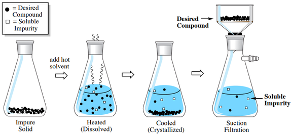

Impurity
| Vietnamese | — |
|---|---|
| English | Impurity |
| Pronunciation | /ɪmˈpjʊərəti/ |
| Word type | noun (as labelled in the PDFs) |
Topic 2 — Meaning (Vietnamese)
Not separately specified in the PDF transcription.
Meaning (English)
Chất không mong muốn có lẫn trong một chất hoặc mẫu vật./ An unwanted substance present in a material.
Example
Crystallisation helps remove impurities from a solid. (n) /ˌsɒljəˈbɪləti/ Độ tan2
Images from the PDFs

